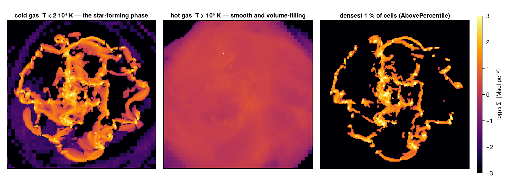
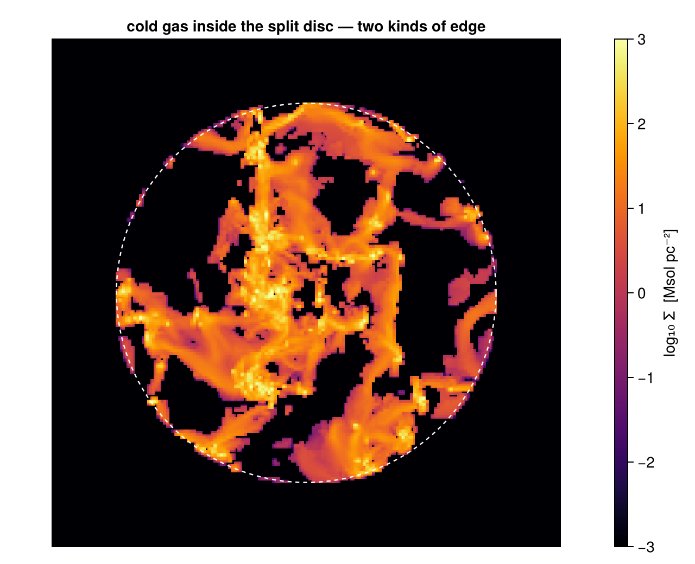

5. Masking & Filtering: Selection by Value
This page is also an executable Jupyter notebook — open / download 05_multi_Masking_Filtering.ipynb. The notebooks run end-to-end and double as part of Mera's test suite.
The sub-region pages select by place — a sphere, a cylinder, a slab. This page selects by state: temperature, density, age, speed, or any quantity Mera can derive. The two are independent, they compose in either order, and together they cover most of what "give me this gas" means.
Two verbs do the work, and the only difference is what they hand back:
| returns | use it when | |
|---|---|---|
filterdata(obj, condition) | a new object of the same type | you want to carry on working — project it, cut it, weigh it |
getmask(obj, condition) | a Vector{Bool} over the rows | you want to pass mask= to a Mera function and keep the original object |
Everything else on this page is about writing the condition.
Reading convention. Longer code cells are cut in two by a banner line:
# ── figure code from here: panels, overlays, colorbars — no new Mera concepts ──Everything above the banner is the Mera part; everything below is Makie decoration.
On this page
- selection by state
- a condition is a quantity, a threshold and a unit
- combining conditions
- two shapes: an object or a mask
- masks inside Mera's own functions
- seeing what a filter keeps
- place × value
- adding a column of your own
- reference: the raw table path
- practical guidance
1. Selection by State
The same galaxy as the sub-region pages, at lmax=8 so the page stays quick. All three data types are loaded, because filtering is not a hydro-only idea — particles filter on age, clumps on their catalogue properties.
# Example-data root. Point this at your own simulation folder, or set the
# MERA_EXAMPLES environment variable; every path below is built from it.
MERA_EXAMPLES = get(ENV, "MERA_EXAMPLES", "/Volumes/FASTStorage/Simulations/Mera-Tests");
using Mera
path = "$MERA_EXAMPLES/RAMSES/manu_sim_sf_L14"
info = getinfo(400, path, verbose=false)
gas = gethydro(info, lmax=8, smallr=1e-5, verbose=false, show_progress=false)
particles = getparticles(info, verbose=false, show_progress=false)
clumps = getclumps(info, verbose=false)
println("gas cells : ", length(gas.data))
println("star particles : ", length(particles.data))
println("clumps : ", length(clumps.data))
*__ __ _______ ______ _______
| |_| | | _ | | _ |
| | ___| | || | |_| |
| | |___| |_||_| |
| | ___| __ | |
| ||_|| | |___| | | | _ |
|_| |_|_______|___| |_|__| |__|
Mera v1.8.0
gas cells : 849332
star particles : 508939
clumps : 644# the two verbs, on the same condition
hot = filterdata(gas, Above(:T, 1e6, unit=:K), verbose=false) # -> a HydroDataType
mask = getmask(gas, Above(:T, 1e6, unit=:K)) # -> a Vector{Bool}
println("filterdata → ", typeof(hot).name.name, ", ", length(hot.data), " cells")
println("getmask → ", typeof(mask), ", ", count(mask), " true of ", length(mask))
println()
println("mass of hot gas, via the object : ", round(msum(hot, :Msol), sigdigits=6), " Msol")
println(" ... via the mask : ", round(msum(gas, :Msol, mask=mask), sigdigits=6), " Msol")
println("identical : ", msum(hot, :Msol) == msum(gas, :Msol, mask=mask))
filterdata → HydroDataType, 489608 cells
getmask → BitVector, 489608 true of 849332
mass of hot gas, via the object : 2.14499e9 Msol
... via the mask : 2.14499e9 Msol
identical : trueSame selection, same answer, two shapes. Which one you want depends on what comes next — §4 makes that concrete.
2. A Condition Is a Quantity, a Threshold and a Unit
Above, Below, InRange and Equals take a quantity name, a value, and the unit that value is in. The quantity may be a stored column (:rho) or anything getvar can derive — temperature, sound speed, Mach number, a cylindrical radius. That is the whole point: you write the physics, not the code that reconstructs it.
conds = [
("Above(:rho, 1, :nH) ", Above(:rho, 1, unit=:nH)), # stored column
("Below(:T, 2e4, :K) ", Below(:T, 2e4, unit=:K)), # derived: temperature
("Above(:cs, 20, :km_s) ", Above(:cs, 20, unit=:km_s)), # derived: sound speed
("Above(:mach, 1) ", Above(:mach, 1)), # derived, dimensionless
("InRange(:r_cylinder, 0,10,:kpc)", InRange(:r_cylinder, 0, 10, unit=:kpc)), # derived geometry
("Equals(:level, gas.lmax) ", Equals(:level, gas.lmax)), # discrete
]
m_all = msum(gas, :Msol)
println(rpad("condition", 34), rpad("cells", 10), "mass share")
println("-"^60)
for (name, c) in conds
s = filterdata(gas, c, verbose=false)
println(rpad(name, 34), rpad(length(s.data), 10),
round(100 * msum(s, :Msol) / m_all, digits=1), " %")
end
condition cells mass share
------------------------------------------------------------
Above(:rho, 1, :nH) 10126 79.8 %
Below(:T, 2e4, :K) 33569 37.0 %
Above(:cs, 20, :km_s) 652583 44.6 %
Above(:mach, 1) 520858 94.5 %
[Mera] Hint: getvar(:r_cylinder) has no `center` — it is measured about the box CORNER.
Pass center=[:bc] for the box centre, or center=[x, y, z] with center_unit.
This is a different argument from the `center` that places a region; give it
the same origin. Absolute positions :x/:y/:z are unaffected.
(shown once per session; verbose(false) silences Mera's messages)
InRange(:r_cylinder, 0,10,:kpc) 8896 0.1 %
Equals(:level, gas.lmax) 501568 92.6 %Note :r_cylinder in that list. A geometric quantity used as a value condition selects a cylinder — but by testing each cell's centre, with no boundary treatment. When the geometry is what you care about, use a region instead (§7); the exactness is worth it.
Two further selectors are worth knowing:
Satisfies(:quantity, f)— an arbitrary predicate, when a threshold is not enough.IsFinite(:quantity)— dropsNaN/Infbefore a statistic. Data hygiene, and cheap insurance.
3. Combining Conditions
&, | and ! compose conditions into one condition. Passing several conditions to filterdata ANDs them, which reads better for the common case.
cold_dense = filterdata(gas, Above(:rho, 1, unit=:nH) & Below(:T, 1e5, unit=:K), verbose=false)
either = filterdata(gas, Above(:T, 1e6, unit=:K) | Above(:rho, 10, unit=:nH), verbose=false)
not_cold = filterdata(gas, !Below(:T, 2e4, unit=:K), verbose=false)
# several arguments = AND, in a form that reads like a sentence
disc_cold = filterdata(gas, InRange(:r_cylinder, 0, 15, unit=:kpc),
Below(:T, 2e4, unit=:K), verbose=false)
for (n, o) in (("rho > 1 nH AND T < 1e5 K", cold_dense),
("T > 1e6 K OR rho > 10 nH", either),
("NOT (T < 2e4 K)", not_cold),
("r < 15 kpc AND T < 2e4 K", disc_cold))
println(rpad(n, 30), rpad(length(o.data), 9), round(msum(o, :Msol), sigdigits=5), " Msol")
end
# a condition and its complement partition the object exactly
cold = filterdata(gas, Below(:T, 2e4, unit=:K), verbose=false)
println()
println("cold + not-cold cells : ", length(cold.data) + length(not_cold.data),
" of ", length(gas.data))
println("cold + not-cold mass : ", round(msum(cold, :Msol) + msum(not_cold, :Msol), sigdigits=10))
println("whole box mass : ", round(m_all, sigdigits=10))
rho > 1 nH AND T < 1e5 K 10080 1.6812e10 Msol
T > 1e6 K OR rho > 10 nH 490701 2.1381e10 Msol
NOT (T < 2e4 K) 815763 1.9503e10 Msol
r < 15 kpc AND T < 2e4 K 516 2.1893e6 Msol
cold + not-cold cells : 849332 of 849332
cold + not-cold mass : 3.096875415e10
whole box mass : 3.096875415e10The partition is exact because ! is a strict negation of the same test — no cell is counted twice and none is dropped. That check costs one line and catches a mis-specified threshold immediately.
Adaptive and discrete selectors. Sometimes the threshold should come from the data rather than from you:
dense10 = filterdata(gas, AbovePercentile(:rho, 90), verbose=false) # densest 10 % of cells
faint = filterdata(gas, BelowPercentile(:rho, 10), verbose=false) # the most diffuse 10 %
core = filterdata(gas, Equals(:level, gas.lmax) &
AbovePercentile(:rho, 99), verbose=false) # finest AND densest
println("densest 10 % of cells : ", rpad(length(dense10.data), 9),
round(100*msum(dense10, :Msol)/m_all, digits=1), " % of the mass")
println("faintest 10 % : ", rpad(length(faint.data), 9),
round(100*msum(faint, :Msol)/m_all, digits=3), " %")
println("finest level & top 1 %: ", rpad(length(core.data), 9),
round(100*msum(core, :Msol)/m_all, digits=1), " %")
densest 10 % of cells : 84934 91.1 % of the mass
faintest 10 % : 0 0.0 %
finest level & top 1 %: 8494 78.6 %AbovePercentile(:rho, 90) is the densest tenth of the cells, whatever the density scale of this simulation happens to be — the right tool when you have not looked at the numbers yet, or when the same script must run on several outputs.
4. Two Shapes: an Object or a Mask
Both verbs select the same rows. The choice is about what you do next.
filterdata returns an object, so it chains: project it, cut a region out of it, filter it again, weigh it. Use it when the selection is the thing you are studying.
getmask returns a Vector{Bool} aligned with the original rows. Use it when you want a statistic of the whole object restricted to a subset — every Mera function with a mask= keyword takes it — or when you need several different subsets of one object without copying the data each time.
cond = Below(:rho, 1, unit=:Msol_pc3)
# the object route: chains straight into other Mera verbs
sel = filterdata(gas, cond, verbose=false)
p = projection(sel, :sd, :Msol_pc2; res=64, center=[:bc], verbose=false, show_progress=false)
println("object route : ", length(sel.data), " cells, map max Σ = ",
round(maximum(p.maps[:sd]), sigdigits=4), " Msol/pc²")
# the mask route: the object stays whole, the statistic is restricted
m = getmask(gas, cond)
println("mask route : ", count(m), " cells, mass = ",
round(msum(gas, :Msol, mask=m), sigdigits=6), " Msol")
println("same mass : ", msum(sel, :Msol) == msum(gas, :Msol, mask=m))
# masks are plain Bool vectors: combine them with the usual operators
m2 = getmask(gas, Above(:T, 1e4, unit=:K))
println()
println("cells satisfying both : ", count(m .& m2))
println("... same as one combined condition : ",
count(m .& m2) == length(filterdata(gas, cond & Above(:T, 1e4, unit=:K), verbose=false).data))
object route : 848882 cells, map max Σ = 161.6 Msol/pc²
mask route : 848882 cells, mass = 1.33692e10 Msol
same mass : true
cells satisfying both : 848882
... same as one combined condition : true5. Masks Inside Mera's Own Functions
Every aggregate that takes a mask= keyword applies it to the rows before reducing. One condition, four statistics, gas and particles side by side:
mg = getmask(gas, Below(:rho, 1, unit=:Msol_pc3))
mp = getmask(particles, Below(:age, 100, unit=:Myr)) # young stars
println(rpad("statistic", 34), rpad("all", 20), "masked")
println("-"^70)
println(rpad("gas msum [Msol]", 34),
rpad(round(msum(gas, :Msol), sigdigits=6), 20),
round(msum(gas, :Msol, mask=mg), sigdigits=6))
println(rpad("gas centre of mass x [kpc]", 34),
rpad(round(center_of_mass(gas, :kpc)[1], digits=4), 20),
round(center_of_mass(gas, :kpc, mask=mg)[1], digits=4))
println(rpad("gas bulk velocity x [km/s]", 34),
rpad(round(bulk_velocity(gas, :km_s)[1], digits=3), 20),
round(bulk_velocity(gas, :km_s, mask=mg)[1], digits=3))
println(rpad("part msum [Msol]", 34),
rpad(round(msum(particles, :Msol), sigdigits=6), 20),
round(msum(particles, :Msol, mask=mp), sigdigits=6))
# wstat takes the mask the same way
s_all = wstat(getvar(gas, :vx, :km_s), weight=getvar(gas, :mass))
s_msk = wstat(getvar(gas, :vx, :km_s), weight=getvar(gas, :mass), mask=mg)
println()
println("gas ⟨vx⟩ mass-weighted [km/s] : all ", round(s_all.mean, digits=3),
" masked ", round(s_msk.mean, digits=3))
statistic all masked
----------------------------------------------------------------------
gas msum [Msol] 3.09688e10 1.33692e10
gas centre of mass x [kpc] 23.3607 23.6093
gas bulk velocity x [km/s] -1.2 -3.094
part msum [Msol] 5.80443e9 1.81123e9
gas ⟨vx⟩ mass-weighted [km/s] : all -1.2 masked -3.094The mask must be as long as the object's row count, which is why it belongs to the object it came from — getmask(gas, …) cannot be passed to a particle function. Mixing them is the one mistake worth watching for.
6. Seeing What a Filter Keeps
A condition is easier to trust when you can see it. Three filters on the same box, same colour scale:
using CairoMakie
CairoMakie.activate!()
# ─────────────────────────────────────────────────────────────────────
# FIGURE INFRASTRUCTURE for the whole page — skim freely on first read.
# The one Mera-relevant definition is `prj`: the projection defaults every panel reuses.
# ─────────────────────────────────────────────────────────────────────
const SDLIM5 = (-3.0, 3.0) # log10 Σ [Msol/pc²] — one colour scale for every panel below
function sdpanel!(ax, p; kpc=gas.info.scale.kpc)
xs = range(p.cextent[1]*kpc, p.cextent[2]*kpc; length=size(p.maps[:sd], 1))
ys = range(p.cextent[3]*kpc, p.cextent[4]*kpc; length=size(p.maps[:sd], 2))
heatmap!(ax, xs, ys, log10.(max.(p.maps[:sd], 1e-3)); colormap=:inferno, colorrange=SDLIM5)
ax.aspect = DataAspect(); ax.backgroundcolor = :black; hidedecorations!(ax)
return ax
end
prj(d; kw...) = projection(d, :sd, :Msol_pc2; direction=:z, center=[:bc], range_unit=:kpc,
xrange=[-16, 16], yrange=[-16, 16], pxsize=[0.1, :kpc],
verbose=false, show_progress=false, kw...)
prj (generic function with 1 method)cold_g = filterdata(gas, Below(:T, 2e4, unit=:K), verbose=false) # state only — full box
hot_g = filterdata(gas, Above(:T, 1e6, unit=:K), verbose=false)
dense1 = filterdata(gas, AbovePercentile(:rho, 99), verbose=false) # adaptive: densest 1 %
for (n, o) in (("cold T<2e4 K ", cold_g), ("hot T>1e6 K ", hot_g), ("densest 1% ", dense1))
println(n, ": ", rpad(length(o.data), 9), round(msum(o, :Msol), sigdigits=4),
" Msol = ", round(100*msum(o, :Msol)/m_all, digits=1), " % of the box")
end
# ── figure code from here: panels, overlays, colorbars — no new Mera concepts ──
fig = Figure(size=(1180, 420))
sdpanel!(Axis(fig[1, 1], title="cold gas T < 2·10⁴ K — the star-forming phase"), prj(cold_g))
sdpanel!(Axis(fig[1, 2], title="hot gas T > 10⁶ K — smooth and volume-filling"), prj(hot_g))
sdpanel!(Axis(fig[1, 3], title="densest 1 % of cells (AbovePercentile)"), prj(dense1))
Colorbar(fig[1, 4]; colormap=:inferno, colorrange=SDLIM5, label="log₁₀ Σ [Msol pc⁻²]")
fig
cold T<2e4 K : 33569 1.147e10 Msol = 37.0 % of the box
hot T>1e6 K : 489608 2.145e9 Msol = 6.9 % of the box
densest 1% : 8494 2.433e10 Msol = 78.6 % of the box
Three views of one simulation, on one colour scale. The cold phase is filamentary and carries 37 % of the mass in 4 % of the cells; the hot phase is smooth and volume-filling, 6.9 % of the mass spread over most of the box; and the densest percentile — a relative threshold — isolates the clumps while holding 79 % of the mass, without anyone having to know this run's density scale.
Read the middle panel with the usual care: it is a column density, so a smooth map means the hot gas is spread along every line of sight, not that it is structureless in 3-D.
7. Place × Value
Geometry and state are independent, so they compose, and the order cannot change the answer. Here the disc is cut as an exact split region (boundary cells carry their :fraction) and then partitioned by temperature.
import Mera: Cylinder # Mera's region type (plotting packages export a Cylinder too)
disc_reg = Cylinder(12., 2.; center=[:bc], range_unit=:kpc) # radius, half-height [kpc]
disc = subregion(gas, disc_reg, verbose=false) # split: rim cells carry :fraction
cold_d = filterdata(disc, Below(:T, 2e4, unit=:K), verbose=false)
rest_d = filterdata(disc, !Below(:T, 2e4, unit=:K), verbose=false)
m_c, m_r, m_d = msum(cold_d, :Msol), msum(rest_d, :Msol), msum(disc, :Msol)
println("cold (< 2e4 K) in the disc : ", round(m_c, sigdigits=5), " Msol")
println("rest (≥ 2e4 K) in the disc : ", round(m_r, sigdigits=5), " Msol")
println("cold + rest vs disc : ", round(m_c + m_r, sigdigits=9), " vs ",
round(m_d, sigdigits=9), " Msol")
println()
# the other order gives the same rows
other = subregion(filterdata(gas, Below(:T, 2e4, unit=:K), verbose=false), disc_reg, verbose=false)
println("filter→region == region→filter cells : ", length(other.data) == length(cold_d.data))
cold (< 2e4 K) in the disc : 8.9066e9 Msol
rest (≥ 2e4 K) in the disc : 1.3963e10 Msol
cold + rest vs disc : 2.28691723e10 vs 2.28691723e10 Msol
filter→region == region→filter cells : trueThe partition still closes exactly inside a split region — filterdata preserves the :fraction column, so a half-inside boundary cell contributes its half to whichever phase it belongs to. That is the property that lets you mix the two selection styles without quietly losing mass at the rim.
The two edges in the map below are worth telling apart: the outer rim is geometric and smooth, feathered by the fraction weighting; the internal edges between cold and warm gas are value edges, and they are cell-sharp, because a cell either passes the temperature test or does not — there is no such thing as half a cell being cold.
p_cd = prj(cold_d)
# ── figure code from here: panels, overlays, colorbars — no new Mera concepts ──
fig = Figure(size=(640, 520))
ax = Axis(fig[1, 1], title="cold gas inside the split disc — two kinds of edge")
sdpanel!(ax, p_cd)
arc!(ax, Point2f(0, 0), 12., 0, 2π; color=:white, linewidth=1.2, linestyle=:dash)
Colorbar(fig[1, 2]; colormap=:inferno, colorrange=SDLIM5, label="log₁₀ Σ [Msol pc⁻²]")
fig

# match the geometric edge to the map's pixel size, so the rim is sharp where it is rendered
disc_px = subregion(gas, disc_reg; refine_to=[0.1, :kpc], verbose=false)
cold_px = filterdata(disc_px, Below(:T, 2e4, unit=:K), verbose=false)
fr = Mera.select(cold_px.data, :fraction)
cs = getvar(cold_px, :cellsize, :kpc)
println("largest straddling cell on the rim : ",
round(maximum(cs[0.0 .< fr .< 1.0]), digits=3), " kpc (map-ready)")
println("cold mass, refine_to vs plain : ", round(msum(cold_px, :Msol) / m_c, digits=5))
largest straddling cell on the rim : 0.094 kpc (map-ready)
cold mass, refine_to vs plain : 1.0refine_to changes how sharply the boundary is drawn, not how much mass is inside it — the ratio above is 1 to five digits. See §7 of the hydro sub-region page for what it costs.
8. Adding a Column of Your Own
Any array as long as the table can be pushed in as a new column and then used like a native one — projected, filtered, masked. transform adds it, select … Not(…) removes it again.
using Mera.IndexedTables # the table verbs (transform, select, Not, columns) live here
mach = getvar(gas, :mach) # a derived quantity, one value per cell
gas.data = transform(gas.data, :mach => mach) # push it onto the table (IndexedTables)
println("columns now: ", propertynames(Mera.columns(gas.data)))
# it behaves like any other column from here on
supersonic = filterdata(gas, Above(:mach, 1), verbose=false)
println("supersonic cells : ", length(supersonic.data), " = ",
round(100*length(supersonic.data)/length(gas.data), digits=1), " % of the box")
gas.data = select(gas.data, Not(:mach)) # and take it away again
println("columns after removal: ", propertynames(Mera.columns(gas.data)))
columns now: (:level, :cx, :cy, :cz, :rho, :vx, :vy, :vz, :p, :passive_scalar_1, :passive_scalar_2, :mach)
supersonic cells : 520858 = 61.3 % of the box
columns after removal: (:level, :cx, :cy, :cz, :rho, :vx, :vy, :vz, :p, :passive_scalar_1, :passive_scalar_2)Mera already derives :mach on demand, so this is not the way to get a Mach number — it is the way to attach something Mera cannot know about: a tracer, a label from an external catalogue, the output of your own model.
9. Reference: the Raw Table Path
Underneath, a Mera object holds an IndexedTable, and every filter above can be written directly against it. This is the older interface. It is still the right tool when you need a predicate that is not a value condition — one that mixes columns, or calls out to your own function — and it keeps existing scripts working unchanged.
The trade-off: you work in code units, positions must be reconstructed by hand, and the result is a table, not a Mera object.
# ---- reading columns: three equivalent ways -------------------------------------------
r1 = select(gas.data, :rho) # IndexedTables
r2 = getvar(gas, :rho) # Mera (same array, and unit-aware on request)
vt = columns(gas.data, (:rho, :level)) # a NamedTuple of columns
println("select == getvar : ", r1 == r2, " columns() gives ", propertynames(vt))
# ---- filtering rows: a predicate on the table ------------------------------------------
density = 3. / gas.scale.Msol_pc3 # threshold in CODE units — no unit= here
filtered_db = filter(p -> p.rho >= density, gas.data)
println("rows kept: ", length(filtered_db), " of ", length(gas.data))
# ---- using a filtered table ------------------------------------------------------------
# (a) pass it to getvar via `filtered_db`
m_a = sum(getvar(gas, :mass, :Msol, filtered_db=filtered_db))
# (b) or rebuild a full Mera object from it
gas_new = construct_datatype(filtered_db, gas)
m_b = sum(getvar(gas_new, :mass, :Msol))
# (c) the value-space equivalent of the whole thing
m_c2 = msum(filterdata(gas, Above(:rho, 3, unit=:Msol_pc3), verbose=false), :Msol)
println("mass via filtered_db / construct_datatype / filterdata : ",
round(m_a, sigdigits=8), " ", round(m_b, sigdigits=8), " ", round(m_c2, sigdigits=8))
select == getvar : true columns() gives (:rho, :level)
rows kept: 210 of 849332
mass via filtered_db / construct_datatype / filterdata : 1.4862768e10 1.4862768e10 1.4862768e10# ---- multi-criteria on the raw table: geometry must be rebuilt by hand -----------------
boxlen = info.boxlen
cv = boxlen / 2. # box centre, code units
radius = 3. / gas.scale.kpc
height = 2. / gas.scale.kpc
# a cell's CENTRE is (cx - 0.5) * boxlen / 2^level — cx is the 1-based index on the level grid
filtered_db = filter(p -> p.rho >= density &&
sqrt(((p.cx - 0.5) * boxlen/2^p.level - cv)^2 +
((p.cy - 0.5) * boxlen/2^p.level - cv)^2) <= radius &&
abs((p.cz - 0.5) * boxlen/2^p.level - cv) <= height, gas.data)
println("hand-built cylinder + density : ", length(filtered_db), " rows, ",
round(sum(getvar(gas, :mass, :Msol, filtered_db=filtered_db)), sigdigits=6), " Msol")
# the same thing as a region and a condition — units, exact boundary, and no geometry by hand
reg = Cylinder(3., 2.; center=[:bc], range_unit=:kpc)
sel = filterdata(subregion(gas, reg, verbose=false), Above(:rho, 3, unit=:Msol_pc3), verbose=false)
println("region × condition : ", length(sel.data), " rows, ",
round(msum(sel, :Msol), sigdigits=6), " Msol (split boundary)")
hand-built cylinder + density : 33 rows, 2.81234e9 Msol
region × condition : 37 rows, 2.83126e9 Msol (split boundary)The two numbers differ, and the difference is the point of the sub-region pages: the hand-built version keeps whole cells whose centres pass the test, the region version weights the boundary cells by the fraction actually inside. Neither is "wrong" — they answer slightly different questions — but only one of them adds up when you put regions next to each other.
Macros. @filter writes a single comparison compactly, and — applied to a Mera object rather than a table — routes through filterdata, so it returns an object and understands derived quantities:
finest = @filter gas :level == gas.lmax # Mera object → HydroDataType
tbl_only = @filter gas.data :rho >= density # raw table → IndexedTable
println("@filter on the object : ", typeof(finest).name.name, ", ", length(finest.data), " cells")
println("@filter on the table : ", typeof(tbl_only).name.name, ", ", length(tbl_only), " rows")
# @apply chains several table-level conditions
filtered_db = @apply gas.data begin
@where :rho >= density
@where abs((:cz - 0.5) * boxlen/2^:level - cv) <= height
end
println("@apply pipeline : ", length(filtered_db), " rows")
@filter on the object : HydroDataType, 501568 cells
@filter on the table : IndexedTable, 210 rows
@apply pipeline : 210 rows# ---- hand-built masks, for comparison with getmask -------------------------------------
thr = 4. / gas.scale.Msol_pc3
mask_a = map(row -> row.rho < thr, gas.data) # predicate over rows
mask_b = getvar(gas, :rho, :Msol_pc3) .< 4. # broadcast over a getvar array
mask_c = getmask(gas, Below(:rho, 4, unit=:Msol_pc3)) # the value-space verb
println("all three agree : ", mask_a == mask_b == mask_c, " (", count(mask_c), " cells)")
println("type : ", typeof(mask_c))
all three agree : true (849177 cells)
type : BitVectorAll three produce the same Vector{Bool}. getmask is the one that states the unit, works on derived quantities, and composes with & | ! — the others are worth knowing because they are what to reach for when the test is not expressible as a condition on one quantity.
10. Practical Guidance
Say the unit. Above(:rho, 1, unit=:nH) is a statement about physics; p.rho >= 3.0 on the raw table is a statement about this run's code units and will mean something different in the next simulation.
Filter, then look. A condition is cheap and a map is cheap. §6 takes seconds and catches a threshold that selects nothing — or everything — before it becomes a result.
Check the partition. A condition and its ! must reproduce the parent's count and mass. One line, and it catches an inverted comparison immediately.
Choose the shape deliberately. filterdata when the subset is the object of study; getmask when you want a statistic of the whole restricted to a part, or several subsets of one object without copying.
Percentiles when the scale is unknown. AbovePercentile(:rho, 99) ports between simulations; Above(:rho, 1e3, unit=:nH) does not, unless you mean it absolutely.
Geometry belongs in a region. InRange(:r_cylinder, …) works, but it is a centre test with no boundary treatment. If the geometry matters, cut it as a region (§7) and let the boundary cells carry their fractions.
Summary
- Two verbs:
filterdatareturns an object you can carry on working with,getmaskreturns aVector{Bool}for any Mera function that takesmask=. They select identically (§1, §4). - A condition is a quantity, a threshold and a unit, and the quantity can be anything
getvarderives — temperature, sound speed, Mach number, age (§2). - Conditions compose with
&,|,!; several arguments mean AND; andAbovePercentile/BelowPercentileset the threshold from the data itself (§3). - Value selection and geometric selection are independent and commute, and
filterdatapreserves a split region's:fraction, so a mass budget still closes when you mix them (§7). - The raw
IndexedTablespath is still there for predicates that are not value conditions — at the price of code units and hand-built geometry (§9).
Continue with:
- Hydro sub-regions — selection by place, exact cell splitting, and mass budgets.
- The sibling sub-region pages for particles, gravity and clumps.
- How Quantities Are Computed — the formula behind every quantity a condition can name.